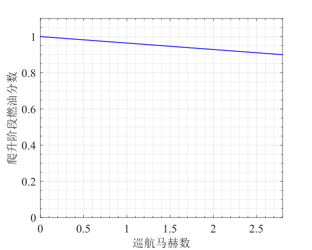
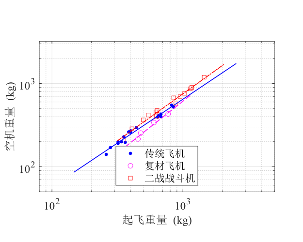

第2章 重量估算
飞机通常必须满足非常严格的航程、续航力、速度和巡航速度目标，同时携带给定的有效载荷。能够预测完成给定任务所需的最小飞机重量和燃油重量是很重要的。
对于一个给定的任务规范，本章将提出一个快速估算下列参数的方法：
1. 方法概述
为了方便起见，通常将起飞重量\(W_{\rm{to}}\)分解为 \[ W_{\rm{to}} = W_{\rm{oe}}+W_{\rm{f}}+W_{\rm{pl}} \label{eq:wto}\] 式中，\(W_{\rm{oe}}\)为使用空重（operating weight empty），\(W_{\rm{f}}\)为任务燃油重量（mission fuel weight），\(W_{\rm{pl}}\)为任务载荷重量（payload weight）。 使用空重\(W_{\rm{oe}}\)为通常表示为： \begin{equation} W_{\rm{oe}}=W_{\rm{e}}+W_{\rm{tfo}}+W_{\rm{crew}} \label{eq:we} \end{equation} 式中，\(W_{\rm{e}}\)为空重，\(W_{\rm{tfo}}\)为废油重量，\(W_{\rm{crew}}\)为机组成员重量。 空重\(W_{\rm{e}}\)有时可以表示为 \begin{equation} W_{\rm{e}}=W_{\rm{ME}}+W_{\rm{FEQ}} \end{equation} 式中，\(W_{\rm{ME}}\)为制造空重（manufacturers empty weight），\(W_{\rm{FEQ}}\)为固定设备重量。固定设备通常包括：
- 航电设备；
- 空调设备；
- 雷达设备；
- 辅助动力单元（Auxiliary Power Unit, APU）；
- 家具和内饰；
- 其他设备。
在此，有两个关键点需要关注：
第1点 从非常基本的考虑来估计所需的任务燃料重量并不是困难的，这将在2.4节中介绍。
第2点 前面所述的12种飞机，其\(\log W_{\rm{to}}\)和\(\log W_{\rm{e}}\)之间存在线性关系。
基于这两点，估算\(W_{\rm{to}}\)、\(W_{\rm{e}}\)、\(W_{\rm{f}}\)的基本步骤如下：
第1步 确定任务载荷重量\(W_{\rm{pl}}\)。
第2步 估计一个起飞重量的值\(W_{\rm{to}_{\rm{guess}}}\)。
第3步 确定任务燃油重量\(W_{\rm{f}}\)。
第4步 依据下式，计算一个使用空重的试探值\(W_{\rm{oe}_{\rm{tent}}}\)\[ W_{\rm{oe}_{\rm{tent}}} = W_{\rm{to}_{\rm{guess}}} - W_{\rm{f}} - W_{\rm{pl}}\]
第5步 依据下式，计算一个空机重量的试探值\[W_{\rm{e}_{\rm{tent}}} = W_{\rm{oe}_{\rm{tent}}} - W_{\rm{tfo}} - W_{\rm{crew}}\]尽管对于一些飞机\(WW_{\rm{tfo}}\)可以表示成起飞重量\(WW_{\rm{to}}\)的\(W0.5\%\)以上，但该值在飞机设计阶段基本可以忽略。
第6步 找出\(W_{\rm{e}}\)的合理的值。
第7步 对比第5步和第6步得到的\(W_{\rm{e}_{\rm{tent}}}\)和\(W_{\rm{e}}\)。接着，对\(W_{\rm{to}_{\rm{guess}}}\)进行调整，并重复第3步到第6步，直到\(W_{\rm{e}_{\rm{tent}}}\)和\(W_{\rm{e}}\)在误差许可范围内是相等的，一般认为误差在\(0.5\%\)即可。
2. 任务载荷和机组成员
任务载荷重量\(W_{\rm{pl}}\)通常在任务规范中进行明确。任务载荷重量一般包含以下内容：
- 乘客和行李；
- 货物；
- 军事载荷，如弹药、炸弹、导弹和各种备用物或吊舱，备用物和吊舱通常外挂，因此影响飞机阻力。
对于商用飞机中的乘客，一般认为每个人则重量为80kg，并且在中短程的飞行中可携带14kg的行李，在远程的飞行中可携带18kg的行李。
3. 起飞重量估算
起飞重量的初始估计通常是对比参照同类型的飞机。如果不能进行合理的比较（也许是因为规范要求的是一种从未设想过的飞机），那么就有必要进行任意的 “猜测”。
4. 任务燃油重量
在2.1中，第1点指出从非常基本的考虑来估计所需的任务燃料重量并不是困难的。本节将提出这种方法。
任务燃油重量\(W_{\rm{f}}\)可以写成 \begin{equation} W_{\rm{f}} = W_{\rm{f}_{\rm{used}}} + W_{\rm{f}_{\rm{res}}} \end{equation} 式中，\(W_{\rm{f}_{\rm{used}}}\)是任务过程中真实使用的燃油，\(W_{\rm{f}_{\rm{res}}}\)是任务备用燃油。
备用燃油通常在任务规范中给出；对于民航运输机，备用燃油要求也会在FAR中给出。备用燃油通常规定为以下一种或多种类型
- 作为使用燃油\(W_{\rm{f}_{\rm{used}}}\)；
- 作为额外航程的要求，以便到达备用机场；
- 作为（额外）待机时间的要求。
为了确定使用任务燃油重量\(W_{\rm{f}_{\rm{used}}}\)，本文将使用燃油分数法。在这种方法中，将飞机的任务过程划分为几个任务阶段。每个阶段所使用的燃油可通过简单的计算或根据经验估算得出。
针对任意飞机使用燃油分数法对其进行说明。下图图定义了飞机的任务剖面。
可以看出，任务剖面被划分为几个任务阶段，每个任务阶段有一个标号，每个阶段也具有一个对应的开始重量和一个结束重量。
下面将给出一个重要的定义：每个阶段的燃油分数是指结束重量和开始重量的比值。
接下来将给出每个任务阶段对应的燃油分数的数值：
第1阶段 开车和暖机 开始重量为\(W_{\rm{to}}\)，结束重量为\(W_1\)。根据前面的定义，该阶段的燃油分数定义为\(W_1/W_{\rm{to}}\)。下表给出了12种飞机该阶段的燃油分数。
| 任务段 序号 |
开车和暖机 1 |
滑跑 2 |
起飞 3 |
爬升 4 |
下降 7 |
着陆、滑跑和关车 8 |
\(\Pi\) |
|---|---|---|---|---|---|---|---|
| 家制飞机 | 0.998 | 0.998 | 0.998 | 0.995 | 0.995 | 0.995 | 0.9792 |
| 单发螺旋桨飞机 | 0.998 | 0.998 | 0.998 | 0.995 | 0.995 | 0.995 | 0.9792 |
第2阶段 滑跑 开始重量为\(W_1\)，结束重量为\(W_2\)。该阶段的燃油分数定义为\(W_2/W_1\)。上表中给出了12种飞机该阶段的燃油分数。
第3阶段 起飞 开始重量为\(W_2\)，结束重量为\(W_3\)。该阶段的燃油分数定义为\(W_3/W_2\)。上表中给出了12种飞机该阶段的燃油分数。
第4阶段 爬升到巡航高度并加速到巡航速度 开始重量为\(W_3\)，结束重量为\(W_4\)。该阶段的燃油分数定义为\(W_4/W_3\)。该阶段的燃油分数可以下图中直接读出。
然而，也可以从Breguet方程得出计算改值。
对于螺旋桨飞机：\[E_{\rm{cl}} = 375\dfrac{1}{V_{\rm{cl}}}\left(\dfrac{\eta_p}{c_p}\right)_{\rm{cl}}\left(\dfrac{L}{D}\right)_{\rm{cl}}\ln\left(\dfrac{W_3}{W_4}\right)\]式中，\(V_{\rm{cl}}\)单位为mph。如果爬升阶段的燃油分数可以以该方式计算，那么有必要估算爬升阶段的\(V_{\rm{cl}}\)、\((\eta_p/c_p)_{\rm{cl}}\)和\((L/D)_{\rm{cl}}\)的平均值。表给出了这些量的参考值。
对于喷气式飞机：\[E_{\rm{cl}} = \left(\dfrac{1}{c_j}\right)_{\rm{cl}}\left(\dfrac{L}{D}\right)_{\rm{cl}}\ln\left(\dfrac{W_3}{W_4}\right)\]如果爬升阶段的燃油分数可以以该方式计算，那么有必要估算爬升阶段的\(c_{j.\rm{cl}}\)和\((L/D)_{\rm{cl}}\)的平均值。表\ref{tab:params_cr_loiter}给出了这些量的参考值。
2.5 空机重量
2.6 算例
算例1：双发螺旋桨飞机
下表给出一个双螺旋桨飞机的任务规范示例。
| 项目 | 内容 |
|---|---|
| 载荷 | 6名乘客，每名乘客80kg；行李共计90kg |